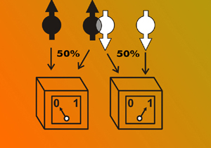

Conceitos e Dúvidas(){
Entrevista
Por: Fellipe Augusto Alves Gurgel
printf: O que é Computação Quântica?
Michele: Computação Quântica é o que você consegue quando se reformula a informação e a computação em um mundo com tecnologias quânticas.
| Resposta Original: |
Quantum computing is what you get when you reformulate information and computation in a world with quantum technologies. |
Michele: Apenas começamos a imaginá-las.
Sabemos que vai revolucionar a comunicação, computação e sensoriamento.
Seremos capazes de resolver alguns problemas computacionais que anteriormente pensávamos serem inviáveis para computar na prática. Podemos resolver alguns problemas de computação distribuída com muito menos comunicação. Podemos implementar sistemas de criptografia cuja segurança é baseada nas leis da física quântica, medir e sentir as coisas com mais precisão e eficiência, anteriormente impossível.
| Resposta Original: |
We have only started to imagine them. |

Michele: Há duas propriedades simples que computadores quânticos podem explorar: superposição quântica e o princípio da incerteza.
Superposição quântica permite que uma cadeia de bits (quânticos) exista em todas as suas possíveis configurações ao mesmo tempo. Assim, por exemplo, três bits quânticos podem existir em estados 000, 001, 010, 011, 100, 101, 110, 111 ao mesmo tempo. Agora tente enumerar as possibilidades se você tivesse apenas cem bits. Há, simplesmente, configurações demais para se escrever. Nós não sabemos como simular eficientemente um computador quântico de propósito geral em um computador normal (clássico). Assim, acreditamos que existem importantes problemas computacionais que podemos resolver com computadores quânticos que não se resolvem com os computadores clássicos.
O princípio da incerteza nos diz que, se você extrair informações de um sistema mecânico quântico, você o perturbará. A diferença entre as informações extraídas e a perturbação é quantificável e permite, por exemplo, a detecção de intrusos. Isso ainda permite uma gama de protocolos de criptografia cuja segurança é baseada nas leis da física quântica.
| Resposta Original: |
There are two simple properties which quantum computers can exploit: quantum superposition and the uncertainty principle. |
Michele: Se eu lhe perguntasse, no início do século 20, como é um computador clássico, o que você teria dito? Você certamente não teria descrito os dispositivos que usamos hoje. Você teria falado dos dispositivos mecânicos muito grandes, depois substituídos pelos aparelhos baseados em tubos de vácuo, e mais tarde substituídos novamente pelo transistor, que têm sido consistentemente miniaturizados por mais de meio século.
Nós ainda estamos procurando pela tecnologia certa, e mesmo quando for encontrada, ela poderia muito bem ser substituída uma ou mais vezes por uma melhor.
Geralmente, prevemos algum tipo de rede de bits quânticos, provavelmente em algum tipo de pequeno chip, que controlamos e lemos com algum tipo de aparelho clássico (lasers, ímãs, bobinas, etc). Estes bits quânticos poderiam ser pequenos circuitos supercondutores, ou rotações de elétrons ou de íons presos, ou partículas de luz, etc, ou algo que não pensamos ainda.
| Resposta Original: |
If I asked you in the early 20th century what a classical computer looks like, what would you have said? You certainly wouldn’t have described the devices we use today. You might have talked about very large mechanical devices, later displaced by vacuum tube based devices, and later displaced again by the transistor, which have consistently been miniaturized for over half a century. |
Michele: Acho que as chances de se tornarem comuns um dia são muito elevadas, só não sei quanto tempo demorará para que tecnologias quânticas de qualidade suficientemente alta sejam desenvolvidas, a fim de construir computadores quânticos em larga escala.
Tal como aconteceu com os computadores clássicos, as primeiras gerações de computadores quânticos provavelmente não estarão nas mãos de usuários normais. No entanto, os problemas que eles resolverem afetará a vida de todos. Muitas pessoas terão acesso a essas ferramentas e, eventualmente, vamos tê-los em nossas casas. Então, todos terão acesso direto ao poder de computação avançada e tecnologias avançadas de comunicação, graças à informação quântica.
| Resposta Original: |
I think the chances are very high that they will become commonplace someday, we just don’t know how long it will take for sufficiently high quality quantum technologies to be developed in order to build a robust large-scale quantum computer. |
Michele: Ferramentas de segurança da informação são construídas em cima de funções criptográficas simples. Se estas funções criptográficas forem fundamentalmente quebradas (por exemplo, a forma como os computadores quânticos quebrariam a criptografia de chave pública utilizada atualmente), em seguida, as ferramentas de segurança cairiam e sistemas de hackeamento se tornariam muito fáceis.
Há muitas vulnerabilidades de segurança em nossos sistemas de computadores hoje. Sistemas mal projetados, mal implementados, práticas básicas de segurança não sendo seguidas, erro do usuário, participantes desonestos, etc.
Uma Internet Quântica funcional permitiria o uso de funções criptográficas que não podem ser quebradas, fechando assim a vulnerabilidade potencial aos hackers. Os hackers, entretanto, encontrariam outras fraquezas para explorar.
| Resposta Original: |
Information security tools are built on top of simple cryptographic functions. If these cryptographic functions are fundamentally broken (for example, the way quantum computers would break currently-used public-key cryptography), then the security tools fall apart and hacking systems becomes very easy. |
Michele: Descrevi o princípio da superposição anteriormente.
O Emaranhamento é uma propriedade muito relacionada, onde dois sistemas físicos distintos são correlacionados de um modo que não poderiam ser simulados usando física clássica (por exemplo, uma sobreposição igual de 00 e 11).
Testes de emaranhamento podem ser utilizados para certificar a quanticidade fundamental de um sistema (uma vez que nenhum sistema clássico pode passar estes testes). Aplicações práticas incluem testar hardwares de criptografia quântica.
| Resposta Original: |
I described the superposition principle earlier. |
Michele: Houve grandes avanços na implementação de tecnologias de processamento de informação quântica. Alguns sistemas mal controlavam um qubit 10 anos atrás, e agora demonstram controle sobre diversos qubits interagindo.
Houve um grande progresso na teoria da implementação da computação quântica com dispositivos barulhentos ou com defeito, incluindo, por exemplo, correção de erro topológico. Este trabalho tem, efetivamente, elevado o limite tolerável de erros que os experimentos precisam alcançar.
Em outras palavras, a lacuna entre o que podemos fazer experimentalmente, e o que sabemos que é necessário para construir computadores quânticos, tem encolhido drasticamente.
Houve também grandes avanços na compreensão dos fundamentos da informação quântica, e desenvolvimento de novas aplicações para os computadores quânticos.
Na próxima década, seria maravilhoso ver um cross-over entre o que podemos fazer experimentalmente e o que a crescente teoria de correção de erros tolerante a falhas diz que é necessário para construir computadores quânticos em larga escala. Talvez otimista, mas é algo que pessoas brilhantes ao redor do mundo estão se esforçando para alcançar.
Além disso, até o momento, a ciência da informação quântica e da tecnologia tem se beneficiado bastante do conhecimento e da experiência em muitas áreas afins da física, matemática, ciência da computação, engenharia, etc. Espero ver, na próxima década, um feedback maior da ciência da informação quântica e tecnologia para estas muitas áreas relacionadas. Como exemplo, para criptógrafos que precisam projetar e implantar uma infraestrutura de criptografia robusta contra futuros computadores quânticos -- pesquisas em computação quântica e em criptografia quântica serão uma parte importante desse esforço.
| Resposta Original: |
There have been tremendous advances in the implementation of quantum information processing technologies. Some systems were barely controlling one qubit 10 years ago, and they are now showing control over several interacting qubits. |
}